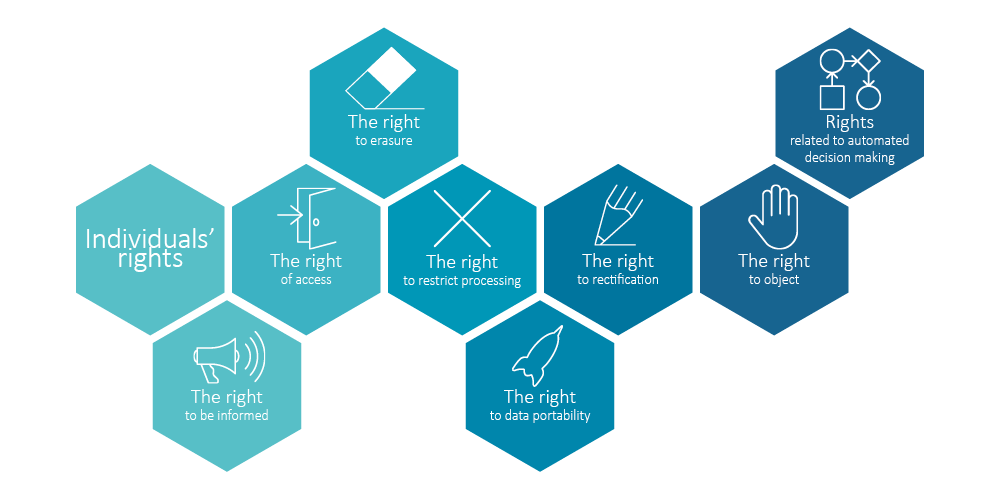

DevOps
The Web
Native Apps vs Progressive webApps vs Algemene Verordening Gegevensbescherming (AVG)
PWA, naast in vorige pagina genoemde voordelen wat betreft eenmalige ontwikkeling en dus minder tijd en geld voor ontwikkelaars en opdrachtgevers heeft een Progressive webApp (PWA) ook ander belangrijk voordeel, want technische IT architectuur en componenten zijn in lijn met de AVG
→ zie:
Wikipedia
Issue Native Apps
Zorgpunt bij native Apps is dat deze toegang naar data op apparaat van gebruiker kunnen hebben, en dat gecombineerd met meestal encrypted communicatie naar back end geeft dat oncontroleerbaar informatie naar onbevoegden kan weglekken als een vorm van spyware. En dus zijn native Apps als concept niet in compliance met de AVG
- Native App niet gebruiken
-
Nu al is het zo dat één van de maatregelen die gebruiker ter bevordering van "AVG compliancy" kan volgen is géén native App te gebruiken, doch daarvoor in de plaats de web browser te gebruiken. Door via browser inloggen op website van sociale media, winkel, or-what-ever en als zodanig het platform te benaderen
- Discipline
-
Het adagium van niet gebruiken van native Apps is ambitieus want men ervaart bij smartphones en tablets het inloggen op websites als "moeilijk gedoe" en dus continuering van gebruik native Apps. Echter, voor echte AVG compliancy zal discipline nodig zijn totdat Progressive wbApps de native Apps hebben vervangen
Toekomst
Progressive webApps hebben conceptueel niét het "data encrypted weglekken" alsook niét het vragen aan gebruiker voor "machtigingen" met toegang tot apparaat gegevens, met aldus gebrek aan "gebruikersinfo". Daarom zijn PWA's verstorend voor het verdienmodel van datasharks en is er dus geen incentive om te veranderen. Wellicht dat wetgeving met verplichting dienaangaande nodig is. Tot die tijd is het aan developers voor eigen initiatief
Free OpenSource Software
Indachtig de AVG richt deze "guide to development" zich op free and OpenSource software (FOSS). Bij FOSS gehanteerde openheid en vrijheid in gebruik is zeer wenselijk. FOSS geeft grootste garantie op privacy en security en is als concept AVG compliant
→ zie:
YouTube Videotorial FOSS